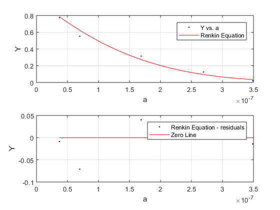

Contents
function [fitresult, gof] = createFit1(a, Y)
T = 20+273.15;
rho = 1.4;
mu = 0.01;
Mw = [180 1200 17000 69000 150000];
a = ((3.*Mw)./(4.*pi.*rho.*(6.022.*10.^(23)))).^(1/3);
f = 6.*pi.*mu.*a;
Dgel = [4.5e-6 1.7e-6 4e-7 1e-7 1.3e-8];
Dwater = ((1.38065e-16)*T)./f;
Y = Dgel./Dwater;
Fit: 'Renkin Equation'.
[xData, yData] = prepareCurveData( a, Y );
ft = fittype( '((1-(a/r))^2)*(1-(2.1*(a/r))+(2.09*(a/r)^3)-(0.95*(a/r)^5))', 'independent', 'a', 'dependent', 'y' );
opts = fitoptions( 'Method', 'NonlinearLeastSquares' );
opts.Display = 'Off';
opts.Lower = 0;
opts.StartPoint = 0.957506835434298;
[fitresult, gof] = fit( xData, yData, ft, opts );
figure( 'Name', 'Renkin Equation' );
subplot( 2, 1, 1 );
h = plot( fitresult, xData, yData );
legend( h, 'Y vs. a', 'Renkin Equation', 'Location', 'NorthEast' );
xlabel a
ylabel Y
grid on
subplot( 2, 1, 2 );
h = plot( fitresult, xData, yData, 'residuals' );
legend( h, 'Renkin Equation - residuals', 'Zero Line', 'Location', 'NorthEast' );
xlabel a
ylabel Y
grid on
ans =
General model:
ans(a) = ((1-(a/r))^2)*(1-(2.1*(a/r))+(2.09*(a/r)^3)-(0.95*(a/r)^5))
Coefficients (with 95% confidence bounds):
r = 6.587e-07 (5.365e-07, 7.81e-07)
